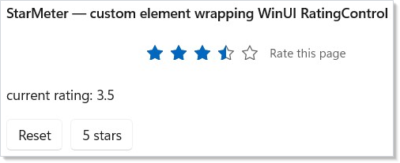

Microsoft.UI.Reactor (Reactor) ships handlers for the built-in WinUI
control gallery, but the protocol that drives them is the same surface
authors use to add their own native controls. The contract you wire
up — an immutable element record, a descriptor or hand-coded handler,
and a factory holder whose static constructor registers the handler
with the global ControlRegistry — gives a custom control
the same lifecycle, the same diff-and-write efficiency, the same pool
reuse, and the same echo-safe two-way binding as Button,
TextBox, and TabView. The factory holder pattern is
trim-clean by construction:
if the app never calls the factory, the handler and the underlying
WinUI control type are unreachable and NativeAOT publishing drops both.
This page is the cookbook for that flow. By the end you will have
added a StarMeter element to a Reactor app, wired it to WinUI's
RatingControl, and matched the built-in performance bar without
writing a line of imperative interpreter code. Read the reference
companion The Control Reconciler Protocol
for the model the steps here plug into.
Extending Reactor with Native Controls¶
The audience is anyone wrapping a native Windows control — a third-
party WinUI control, a custom Control subclass, or an existing WinUI
control that the built-in catalog has not yet covered. The walk-through
ports Microsoft.UI.Xaml.Controls.RatingControl end-to-end so the
shape of every step is concrete; the patterns transfer to anything
that descends from FrameworkElement. Cross-reference the built-in
descriptors in src/Reactor/Core/V1Protocol/Descriptor/Descriptors/
as you adapt the example — they are the production examples of every
shape this page mentions.
The four-step playbook¶
The whole flow is four steps, plus an optional fifth for control families that need a derived-type registration. The same four steps cover every leaf control in the built-in catalog; do them in the listed order — the factory holder in Step 3 must exist before Step 4 can use the element, because that holder's class-init is what registers the handler.
| Step | What you write | Where it lives |
|---|---|---|
| 1 | An Element record subclass with one field per prop and one field per event callback, primary constructor internal so callers must reach it through the factory |
App code, next to the component that uses it |
| 2 | A ControlDescriptor<TElement, TControl> (or IElementHandler<TElement, TControl>) wiring each field to a WinUI property or event |
A static class in the same file or a sibling |
| 3 | A public static class factory holder whose static constructor calls ControlRegistry.Register<TElement, TControl>(static () => new MyHandler()) and whose Of(...) method is the sole construction path for the element |
Co-located with the element record |
| 4 | A component that calls MyControl.Of(...) like any other factory in the DSL |
Anywhere — usage shape is up to you |
A fifth step — ControlRegistry.RegisterForDerivedTypes against a
non-generic intermediate base — lets one registration catch every
closed-T variant of a generic element family. It is what the typed
templated-list ports use; you only need it if you are adding a
similar family.
Caveat: Why a factory holder, not a manual
Registercall at startup? Thestatickeyword on the lambda in Step 3 is mandatory, and the holder's class-init being the registration trigger is what makes the control trim-clean under NativeAOT publishing (see Step 6 — Wrap the constructor in a factory holder, then use it). If no component ever callsStarMeter.Of(...), the holder is unreachable; the trimmer follows that unreachability through the cctor to the handler class and the WinUI control type, and removes all three from the published binary. A manualreconciler.RegisterHandler<...>call at app bootstrap roots every custom control unconditionally and defeats that story — it is documented in The Control Reconciler Protocol as the explicit-override escape hatch for tests and host substitution, not the standard authoring path.
Step 1 — Define the Element record¶
// An Element subclass with one controlled prop (Value), three one-way
// props (MaxRating, Caption, IsClearEnabled), and one callback (OnValueChanged).
// Controlled props use Optional<T>: Unset means the WinUI control owns the value.
// Records give the reconciler value-equality for free — two StarMeterElement
// instances with identical fields compare equal and Update becomes a no-op.
//
// The primary constructor is `internal` (spec 048 §6 construction discipline):
// external callers cannot `new StarMeterElement(...)` directly, so the only
// reachable construction path is `StarMeter.Of(...)` below — whose class-init
// installs the global handler registration. Init properties stay `public` so
// `Of(...)` and its callers can configure the optional fields, and `with`
// expressions still work across the assembly boundary.
public sealed record StarMeterElement : Element
{
public Optional<double> Value { get; init; } = Optional<double>.Unset;
public int MaxRating { get; init; } = 5;
public string? Caption { get; init; }
public bool IsClearEnabled { get; init; } = true;
public System.Action<double>? OnValueChanged { get; init; }
internal StarMeterElement(Optional<double> value, System.Action<double>? onValueChanged = null)
{
Value = value;
OnValueChanged = onValueChanged;
}
}
The record encodes everything the element exposes — controlled props,
one-way props, the optional caption, and the user's
OnValueChanged callback. The choice of record matters: the
reconciler diffs elements with value equality, so two
StarMeterElement instances with identical fields compare equal and
the descriptor's Update path becomes a no-op. Reach for record class
when the element will be created millions of times per second (so the
sealed-record allocation is the dominant cost); reach for record
struct only after profiling shows the heap pressure matters — most
custom controls are well-served by the default sealed-record shape.
The primary constructor is internal on purpose: it closes off
new StarMeterElement(...) from outside the assembly that owns the
element, leaving StarMeter.Of(...) (Step 6) as the sole external
construction path. That is the construction discipline spec 048 §6
requires for the factory-holder trim story
to hold — if external callers could bypass Of, the holder's class-
init would not be guaranteed to run and the global registration could
be missing when the element reached the reconciler. Init properties
stay public so Of(...) (and with expressions for downstream
authors) can configure the optional fields across the assembly
boundary.
The fields below are the only thing your component author touches. Every named property maps to one descriptor entry in Step 2.
| Field | Kind | Why |
|---|---|---|
Value |
controlled Optional<double> |
HasValue means Reactor force-asserts the value; Unset means the WinUI control owns it. |
MaxRating |
one-way int |
Driven by the element, never edited on the WinUI side. |
Caption |
optional one-way string? |
Demo uses an explicit skip predicate; DP-backed fallbacks should prefer Optional<T> + dp:. |
IsClearEnabled |
one-way bool |
Same as MaxRating — declarative knob. |
OnValueChanged |
callback Action<double>? |
Subscribes only when non-null; the descriptor gates the trampoline on it. |
Inherit from Element (not FrameworkElement, not Control) — this
is the Reactor record, not the WinUI control. The built-in fluent
modifier chain (.Width(...), .Margin(...), .Foreground(...))
applies to the built-in element types it was authored against; a
custom element does not get those modifiers for free. Authors who
want chainable modifiers on their own element add an
Action<TControl>[] Setters field and an extension-method namespace
that appends to it, then point the descriptor's GetSetters selector
at the field. The
Modifier System page walks through the chain
shape; keeping the demo focused, the cookbook below omits it.
Step 2 — Choose a shape (descriptor vs hand-coded)¶
Reactor's handler protocol has two surfaces — declarative
(ControlDescriptor)
and imperative
(IElementHandler) — that
land on the same dispatch table. New controls should default to a
descriptor; reach for a hand-coded handler only when the descriptor
escape hatches (.Imperative, .HandCoded…) still cannot express
the diff.
| Use a descriptor when | Reach for a hand-coded handler when |
|---|---|
Props map 1:1 to WinUI properties, or jointly through a tuple get |
Mount has irreducible imperative logic (template-part lookups via OnApplyTemplate, multi-control composition) |
Events follow subscribe(handler) ↔ readBack(control) |
Events route through non-CLR shapes (raw routed events, native callbacks) |
The control fits one of the standard ChildrenStrategy shapes |
The control has a children-realization model the strategy set does not cover (custom virtualization, mixed item types per slot) |
| You want the next reader to skim the spec, not the code | You are wrapping a control whose contract the framework cannot yet express declaratively, and adding a new entry shape would not pay back |
Every built-in port in src/Reactor/Core/V1Protocol/Descriptor/Descriptors/
is a descriptor. The few hand-coded IElementHandler implementations
in src/Reactor/Core/V1Protocol/Handlers/ are the ones whose diff
shape genuinely does not fit a declarative entry list — read them as
the bar for "complicated enough to write by hand."
Step 3 — Wire props¶
public static class StarMeterDescriptor
{
public static readonly ControlDescriptor<StarMeterElement, WinUI.RatingControl> Descriptor =
new ControlDescriptor<StarMeterElement, WinUI.RatingControl>
{
// Leaf control — no children. (See ChildrenStrategy survey for
// the other shapes: SingleContent, Panel, NamedSlots, ItemsHost…)
Children = new None<StarMeterElement, WinUI.RatingControl>(),
}
// OneWay props: written on Mount, diff-and-written on Update.
.OneWay(
get: static e => e.MaxRating,
set: static (c, v) => c.MaxRating = v)
.OneWay(
get: static e => e.IsClearEnabled,
set: static (c, v) => c.IsClearEnabled = v)
// OneWayConditional skips the write when the predicate is false —
// leaves Caption at the control's default for elements that didn't
// supply one, rather than forcing it to null and losing a style.
.OneWayConditional(
get: static e => e.Caption,
set: static (c, v) => c.Caption = v!,
shouldWrite: static e => e.Caption is not null)
// Controlled is the two-way binding shape. Its get lambda returns
// Optional<double>: Unset skips framework writes so the control owns
// the value; HasValue force-asserts on Mount and Update with echo
// suppression, then forwards user input through OnValueChanged.
// Subscription is gated on the callback being non-null.
.Controlled<double, object>(
get: static e => e.Value,
set: static (c, v) => c.Value = v,
subscribe: static (fe, h) => ((WinUI.RatingControl)fe).ValueChanged += (s, e) => h(s, e!),
unsubscribe: static (fe, h) => { /* trampoline anchored for control lifetime */ },
callback: static e => e.OnValueChanged,
readBack: static c => c.Value);
// The thin `new()`-able handler subclass that the `static` lambda in
// StarMeter's cctor instantiates. Subclassing DescriptorHandler keeps
// the descriptor accessible *only* through this handler — the trimmer
// can drop both if the StarMeter factory is never called.
internal sealed class Handler : DescriptorHandler<StarMeterElement, WinUI.RatingControl>
{
public Handler() : base(StarMeterDescriptor.Descriptor) { }
}
}
Each fluent builder call adds one
PropEntry
to the descriptor. The interpreter iterates them in declaration order
during Mount and Update. The descriptor above uses three of the
common shapes:
.OneWay(get, set) — MaxRating and IsClearEnabled. The
interpreter writes the value at Mount; on Update it compares the old
element's value against the new and writes only when the values
differ. Use this for always-write props with no callback: the
element is authoritative and there is no user edit channel to echo.
The default comparer is EqualityComparer<TValue>.Default; pass an
explicit comparer to the optional comparer parameter for
floating-point tolerance or custom-type equality.
.OneWay(get, set, dp:) — the DP-backed fallback channel. When the
get lambda returns Optional<T>, HasValue writes through set
and Unset calls ClearValue(dp), releasing the local value so
WinUI's style / template / inherited / default precedence chain can
win. Use this when the authoring question is one-way with WinUI
fallback (for example, a themeable brush). If there is no DP or the
predicate is not a simple set-vs-unset choice, keep
.OneWayConditional(get, set, shouldWrite) as the explicit skip-write
shape.
.InitialOnly(get, set) — the mount-only channel. It writes once at
Mount and never on Update, the same role React's defaultValue plays
for uncontrolled inputs. Use it for props that seed a control and then
must hand authority to WinUI forever.
.Controlled<TValue, TArgs>(...) — Value. Controlled props always
use an Optional<TValue> element field and an Optional-returning
get: lambda. Unset returns early on Mount and Update, meaning the
WinUI control owns the value; HasValue force-asserts the element's
value (bare on Mount, echo-suppressed on Update) and user interaction
round-trips through the callback. This is Reactor's C# equivalent of
React's controlled-input split: React can tell <input> from
<input value={x}> because JSX preserves prop omission, while C#
records cannot distinguish an omitted property from a property set to
its default. Optional<T> supplies that missing bit.
Decision tree for descriptor authors:
| Intent | Element prop type | Builder |
|---|---|---|
| Controlled with user authority | Optional<T> |
.Controlled(...) / .HandCodedControlled(...) |
| One-way with WinUI fallback | Optional<T> |
.OneWay(get, set, dp: SomeControl.SomeProperty) |
| Mount-only seed | T |
.InitialOnly(get, set) |
| Always write, no callback | T |
.OneWay(get, set) |
| Reference to another realized element | ElementRef<TTarget>? |
.Reference<TTarget>(get, set) |
| Ordered references to several elements | IReadOnlyList<ElementRef<TTarget>>? |
.ReferenceList<TTarget>(get, apply) |
Reference properties¶
Use reference entries when a native control property points at another
realized FrameworkElement: TeachingTip.Target, relationship
properties such as automation LabeledBy, or custom owner/source slots
on a control. The element record stores an ElementRef<TTarget> (or an
ordered list of them). The descriptor declares the edge:
descriptor.Reference<FrameworkElement>(
get: e => e.Target,
set: (c, target) => c.Target = target);
descriptor.ReferenceList<FrameworkElement>(
get: e => e.Related,
apply: (c, targets) =>
{
c.Related.Clear();
foreach (var target in targets)
c.Related.Add(target);
});
.Reference writes the current target on mount, subscribes to the
cell, and rewrites the property when the target mounts later or
unmounts. .ReferenceList rebuilds the target list in author
declaration order and omits unresolved cells. Hand-coded handlers use
binding.Reference / binding.ReferenceList for the same edge when no
descriptor entry can express the control. D1 rule: do not read
ref.Current inside a handler and assign it to a reference property;
that is only a snapshot and breaks late binding and clear-on-unmount.
REACTOR_REF_001 steers that anti-pattern back to a reactive edge.
Caveat: For reference-type optionals, the implicit conversion is deliberate but easy to misread:
with { Background = null }for anOptional<Brush>property becomesOptional.Of(null)— an explicit force-assert ofnull— notOptional<Brush>.Unset. WriteOptional<Brush>.Unsetwhen the control should own the value.
The subscribe lambda's shape is (FrameworkElement,
EventHandler<TArgs>) → void; the engine boxes the control identity
through FrameworkElement to keep the entry generic across closed-T
tuples. TArgs is whatever the WinUI event carries — for
RatingControl.ValueChanged the args type is object because WinUI
authors the event with TypedEventHandler<RatingControl, object>.
Subscription is gated on callback returning non-null — if the
element doesn't carry OnValueChanged, no trampoline is wired and the
dispatch cost for that prop stays at zero.
Caveat: The
unsubscribelambda is intentionally a no-op body — descriptor trampolines anchor to the control's lifetime, not the element's. The control returns to the pool, the pool reset contract clears the trampoline slot on the typed event-payload box, and the next Mount finds an empty slot and re-subscribes. Writing a real unsubscribe into the lambda double-frees the subscription when the control pools and is the most common source of "the event stops firing after a re-render" bugs. If your control genuinely needs explicit unsubscribe on unmount, overrideIElementHandler.Unmountand tear down there.
Step 4 — Wire events (the non-DP case)¶
StarMeterElement.Value is bound to a property and an event together,
so it uses the .Controlled shape above. Events that do not
round-trip a DP — Button.Click, Image.ImageOpened,
TextBox.SelectionChanged — use a sibling builder:
| Builder | Use when |
|---|---|
.HandCodedEvent<TPayload, TDelegate>(subscribe, callbackPresent, trampoline, slotIsNull, setSlot) |
Fire-and-forget event with no associated DP. The trampoline is a static delegate that closes over no per-instance state; per-control state goes on the TPayload slot. |
binding.OnCustomEvent<TArgs>(subscribe, unsubscribe, handler) inside a hand-coded handler |
When you have already chosen the hand-coded shape and want the simpler closure-based trampoline. Allocates a closure per Mount instead of reusing a static delegate. |
The ButtonDescriptor source (in
src/Reactor/Core/V1Protocol/Descriptor/Descriptors/ButtonDescriptor.cs)
is the canonical example of .HandCodedEvent — including the
short-circuit for IsDisabledFocusable and the
Reconciler.GetElementTag tag refresh.
Step 5 — Declare a child strategy¶
StarMeterElement is a leaf, so the descriptor declares
Children = new None<…>(). The dispatch surface is the same as the
ChildrenStrategy survey; the
right strategy is whichever matches your WinUI control's structural
contract:
| Your WinUI control's child shape | Strategy |
|---|---|
| No children | None |
One Content / Child slot |
SingleContent(GetChild, SetChild) { GetCurrentChild = … } |
Children collection on a Panel |
Panel(GetChildren, GetCollection) |
Named slots (Header, Content, Footer) |
NamedSlots([NamedSlot("Header", …), …]) |
Flat items collection (Items) of values or pre-built elements |
ItemsHost(GetItems, GetCollection) |
| Typed templated list with keyed reconcile | TemplatedItems<TItem, TElement, TControl>(GetItems, KeySelector, BuildItemView) |
| Hierarchical tree | TreeChildren(GetNodes) |
| Tabs / pivots with per-item containers | TabItemsHost(GetItems, GetCollection, GetContent, CreateContainer) |
The standard strategies cover everything in the built-in catalog. The
Imperative<TElement, TControl> escape hatch exists for the case
where none of them fit — for example, a control whose children live
on three different non-collection properties that must reconcile
together. Reach for it last; you give up the engine's keyed reconcile
and lose descendant component state across re-renders that touch the
imperative slot.
Step 6 — Wrap the constructor in a factory holder, then use it¶
// Spec 048 §6 Pattern A — the factory holder *is* the registration trigger.
// The static cctor runs the first time any member of `StarMeter` is touched
// (CLR-guaranteed precise-init), which means the global ControlRegistry
// entry is in place before the first Of() call returns its element.
//
// The `static` keyword on the lambda is MANDATORY (not stylistic): it
// guarantees the delegate is cached in a static field (one allocation,
// ever) and captures nothing. A non-static lambda compiles but allocates
// a closure per Register call AND defeats the trimmer's ability to follow
// the holder→handler→control chain. The static lambda is what makes
// Pattern A trim-clean.
public static class StarMeter
{
static StarMeter() =>
ControlRegistry.Register<StarMeterElement, WinUI.RatingControl>(
static () => new StarMeterDescriptor.Handler());
// Sole construction path for StarMeterElement (spec §6 construction
// discipline). Calling Of() guarantees the handler is registered before
// the returned element is mounted — the cctor above runs before any
// member of this type, including Of, can be invoked.
public static StarMeterElement Of(
double value,
System.Action<double>? onValueChanged = null,
int maxRating = 5,
string? caption = null,
bool isClearEnabled = true) =>
Of(value, onValueChanged, maxRating, caption, isClearEnabled);
public static StarMeterElement Of(
Optional<double> value,
System.Action<double>? onValueChanged = null,
int maxRating = 5,
string? caption = null,
bool isClearEnabled = true) =>
new(value, onValueChanged)
{
MaxRating = maxRating,
Caption = caption,
IsClearEnabled = isClearEnabled,
};
}
The StarMeter holder is the bridge between your descriptor and the
runtime. The CLR's precise-initialization rules guarantee its static
constructor runs exactly once, immediately before the first member
access — which means the global
ControlRegistry.Register
call lands before StarMeter.Of(...) can return. No app bootstrap
code is involved; the registration is co-located with the only
construction path for the element. Multiple components calling
StarMeter.Of(...) from different threads are safe — the CLR
serializes class init.
The static keyword on the lambda passed to ControlRegistry.Register
is mandatory, not stylistic:
- A
staticlambda is cached in a compiler-generated static field — one delegate allocation, ever, no matter how many times the cctor runs (which is one). - A
staticlambda captures nothing (a capture is a compile error), so the trimmer can prove the handler factory does not hold a reference to anything outsideMyHandleritself. That is what lets the trimmer drop the entire holder → handler → control chain whenStarMeteris unreachable. - A non-
staticlambda compiles, allocates a closure object perRegistercall, and roots whatever it captures (typicallythis) — which on a static cctor is nothing useful, but the trimmer treats the closure as a generic reference that may hold arbitrary types. See Common Mistakes — Passing a non-static lambda to ControlRegistry.Register.
class ExtendingApp : Component
{
public override Element Render()
{
var (rating, setRating) = UseState(3.5);
return VStack(16,
TextBlock("StarMeter — custom element wrapping WinUI RatingControl")
.FontSize(14).SemiBold(),
// StarMeter.Of(...) is the sole construction path: it returns a
// StarMeterElement AND ensures (via its cctor) that the global
// ControlRegistry has the handler. No reconciler.RegisterHandler
// call lives anywhere in this app.
StarMeter.Of(rating, setRating, caption: "Rate this page"),
TextBlock($"current rating: {rating:0.0}"),
HStack(8,
Button("Reset", () => setRating(0)),
Button("5 stars", () => setRating(5)))
).Padding(20);
}
}

That is the entire path from setRating(5) to a frame. The component
calls StarMeter.Of(rating, setRating, ...); the holder's class-init
has already run, so the global ControlRegistry carries the entry
for StarMeterElement; the reconciler walks the new element tree,
the registered descriptor handler is invoked for StarMeterElement,
the interpreter diffs against the previous element (only Value
changed), writes through WriteSuppressed, the trampoline drains the
suppress counter on the next echo, and the loop ends with the control
at 5 stars. The rest of the app's controls dispatch through the
built-in handlers in lockstep.
Prove your control trims. The repo ships a tiny NativeAOT proof
harness at tests/aot_trim_proof/
that publishes a Reactor app whose Render() references only
TextBlock and Button, then asserts that the handler class names
and element record names of every other built-in control are absent
from the published binary. Copy the same pattern for your control:
publish your app with dotnet publish -p:PublishAot=true, then grep
the resulting binary for your custom handler class name. If
StarMeter.Of(...) is reachable, the name appears; if no component
references it, the name is gone. That round-trip is the only
authoritative test that Pattern A is wired correctly.
Patterns¶
A few recurring shapes turn up across most custom-control ports:
Match a built-in's perf bar without thinking about it. Use a
descriptor; let RentControl pool the WinUI control; let Controlled
suppress its own echoes. The interpreter's per-entry diff is a single
equality check against the previous element's value — unchanged
props pay one comparison and zero writes. Pool reuse, echo
suppression, and static trampolines are defaults of the protocol, not
opt-ins.
Bundle related fields into one prop entry. A control that
exposes (Color, IsOn) → Background is one entry, not two — the
get returns a tuple and the set reads both fields. The diff fires
exactly when either input changes. This is how the LED indicator in
the Control Reconciler Protocol reference
collapses two element fields into one WinUI write.
Layer in a Reactor-friendly default for an awkward control. Many
WinUI controls require an initial property write to "behave"
(TextBox.PlaceholderText, RatingControl.MaxRating). Use
.InitialOnly(get, set) to seed those once at Mount without paying the
diff-and-write cost on Update. The interpreter ignores InitialOnly
entries on the Update path.
Wrap a third-party control whose API is unstable. Put the
descriptor in a sealed static class, mark every reference to the
third-party type internal, and re-export an Element-typed
factory. Your component authors depend on the element, not the
control. When the third-party control breaks compatibility, you
update one file; every component keeps compiling.
Pre-flight the perf bar with the bench harness. The Reactor repo
includes a perf_bench project (tests/perf_bench/) that exercises
descriptors against the M1 / M2 / M5 / M7 / M10 micro-benches the
spec uses to validate the descriptor model. Drop your descriptor into
the harness and run the relevant bench before locking your port in.
Common Mistakes¶
Subscribing in Update instead of Mount. A descriptor's
Controlled entry already gates subscription on the
mount-then-subscribe ordering — the interpreter calls
EnsureSubscribed once after the Mount loop and again on each Update
to catch null→non-null callback transitions. If you are hand-coding a
handler and forget to centralize subscription in Mount, every
re-render double-subscribes the event.
Forgetting WriteSuppressed in a hand-coded Update. A
controlled prop write from Update echoes through the trampoline
back into the user's state setter. The descriptor's Controlled
entry wraps the write for you; a hand-coded handler must mirror it
with binding.WriteSuppressed(() => ctrl.Value = newValue).
Forgetting it is the single most common cause of "the value snaps
back when I edit it" bugs.
WriteSuppressed (ReactorBinding.WriteSuppressed, and the
per-binding ctx.BindFor(ctrl, el).WriteSuppressed(...)) is the
supported, RCW-safe public extension point for custom value-bearing
controls — you never touch the framework's internal echo suppressor
(issue #206). The controlled-control contract is: pair exactly one
WriteSuppressed with exactly one programmatic write, and gate it on
a live readback check (if (ctrl.Value != newEl.Value)) — comparing
the control's current value against the rendered value, exactly as
the engine's ControlledPropEntry.Update does. Gating on the live
readback (rather than oldEl.Value != newEl.Value) means the write
also fires when the control has drifted from the rendered value even
though the element is unchanged — snapping drift back — while still
ensuring the suppression token is consumed by the engine-provoked echo
and never strands to swallow the user's next real edit. A worked,
external-assembly proof of exactly this lives in
tests/external_proof/
(GaugeHandler — a Slider-shaped double Value control authored
against the public surface only).
Stashing per-control state on the descriptor / handler. The
descriptor and the handler instance are registered once per host.
Per-control state needs to live on the control — either on the
attached state DP (use Reconciler.SetElementTag / GetElementTag)
or on the typed event payload box (use
Reconciler.GetOrCreateControlEventPayload<TPayload>). The pool
reset contract clears both on ReturnControl; descriptor-level state
survives pool rent and corrupts the next mount.
Passing a non-static lambda to ControlRegistry.Register. The
static keyword on the factory lambda is mandatory (see
Step 6).
Writing
ControlRegistry.Register<MyElement, MyControl>(() => new MyHandler())
without the static modifier compiles, but allocates a closure object
per Register call and defeats the trimmer's ability to drop the
handler/control chain when the factory holder is unreachable. The
compiler will accept either shape; the REACTOR_DESC_001 analyzer
(StaticRegisterLambdaAnalyzer) is your guard. Always write
static () => new MyHandler().
Bypassing the factory with new MyElement(...). The whole reason
the element's primary constructor is internal is to make
new StarMeterElement(...) from outside the assembly a compile
error. If you also expose the element record from a library, do not
re-export a public constructor or a parameter-forwarding public
StarMeterElement Create(...) helper that calls the internal ctor —
both bypass the holder's class-init and the first time your library's
element reaches an unregistered reconciler the mount will throw.
StarMeter.Of(...) (which triggers the cctor and returns the
element) is the only externally-reachable construction path that's
safe.
Registering on a non-global reconciler when you meant the global
one. Reconciler.RegisterHandler<...> is the per-host escape hatch
documented in The Control Reconciler Protocol;
it is meant for tests substituting a fake handler, not for shipping
custom controls. If your app has multiple ReactorHost instances and
your control is registered through Pattern A on the global
ControlRegistry, every host sees it automatically — the four-step
dispatch precedence ends with the global registry, so no per-host
call is needed.
Capturing the element in a static trampoline. The static trampoline pattern works because it reads the live element on every fire. Capturing the element in the static closure is a contradiction in terms — there is no closure on a static — but the equivalent mistake on a hand-coded trampoline that closes over the element instance does exactly that, and the trampoline observes the element that existed at Mount forever.
Tips¶
Start from the closest built-in descriptor. Copy the most
similar descriptor in src/Reactor/Core/V1Protocol/Descriptor/Descriptors/,
strip what does not apply, and adapt. The built-ins encode the
production patterns for every shape you are likely to need —
including the coercion edge cases (Slider.Min, NumberBox.Max) and
the multi-event control patterns (TextBox's Text +
SelectionChanged).
Keep the element record minimal. Every field is a public contract — once consumers depend on it, you cannot drop or rename it without churn. Add fields as components need them, not preemptively.
Test the round trip with the existing fixture harness. Add a
fixture in tests/Reactor.AppTests.Host/SelfTest/Fixtures/ that
drives your control via an automation peer
(IInvokeProvider/IValueProvider) and asserts the callback fires
the right number of times for the right values. The pattern is
established and the fixture runner gives you a stable stable cross-
process test rig for free.
Document the perf shape inline. If your control has non-obvious performance characteristics — pool opt-out, custom comparer for floating-point tolerance, deliberately imperative entry — capture the reason in a comment on the descriptor field, not on the calling component. The descriptor is where future maintainers will look.
Read the Control Reconciler Protocol reference once end-to-end. The six body sections above are the recipe; the protocol page is the specification it implements. The two pages together are the complete contract — bookmark both.
Keep devtools-adjacent hooks in the optional package. Control helpers
that only serve the --devtools MCP/preview surface belong in
Microsoft.UI.Reactor.Devtools, not core Microsoft.UI.Reactor. That
keeps retail apps from resolving or shipping devtools implementation IL
unless they add the optional package and enable Reactor.DevtoolsSupport.
Next Steps¶
- The Control Reconciler Protocol — the model the steps on this page plug into.
- Reconciliation — what happens before the registered handler is invoked, and how Mount vs Update vs Unmount get chosen.
- Element Pool — what
RentControlactually does, and how the per-type pool keepsMountallocation-free. - Modifier System — how the
Setterschain a descriptor applies after its own prop loop works. - Hooks Internals — how state changes turn into Render calls, which is the upstream half of every loop the protocol on this page is the downstream half of.